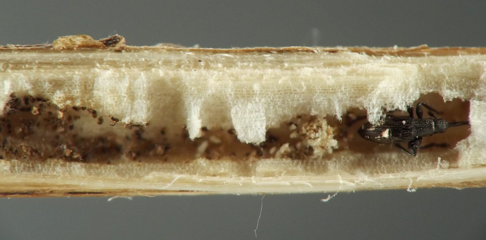
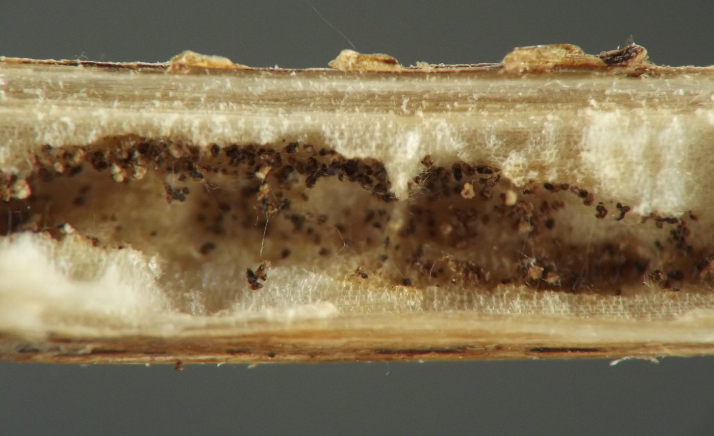
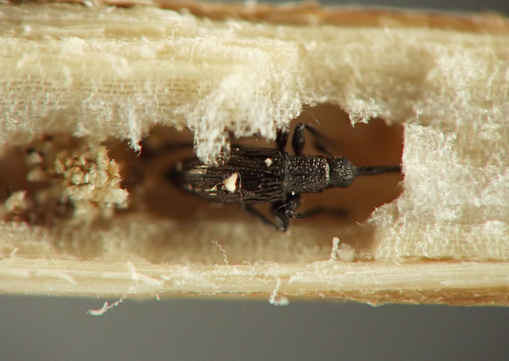
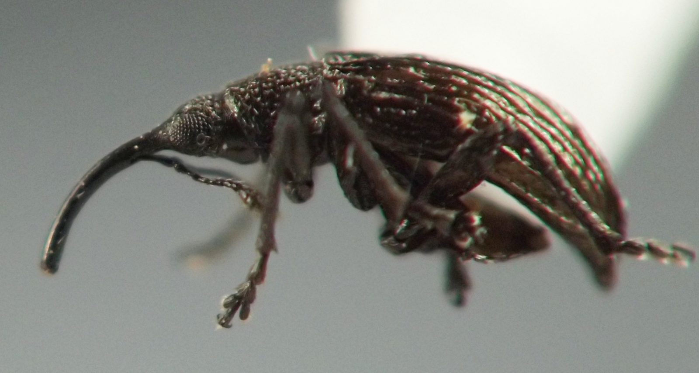
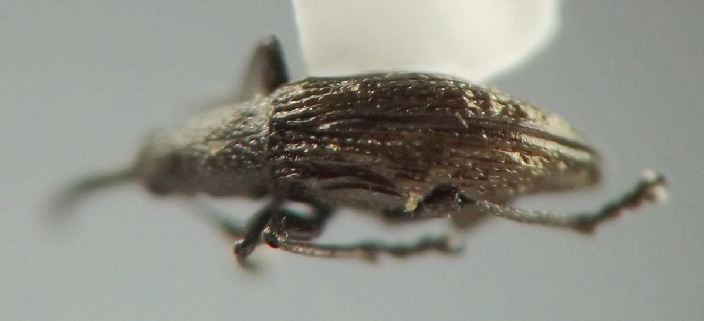
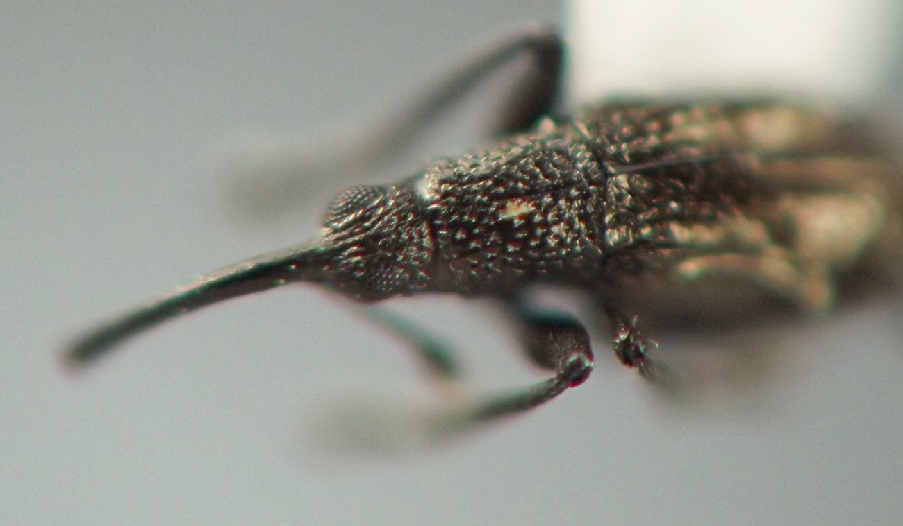
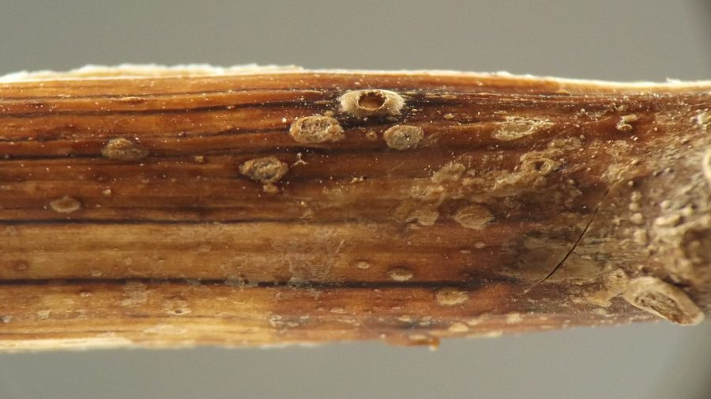
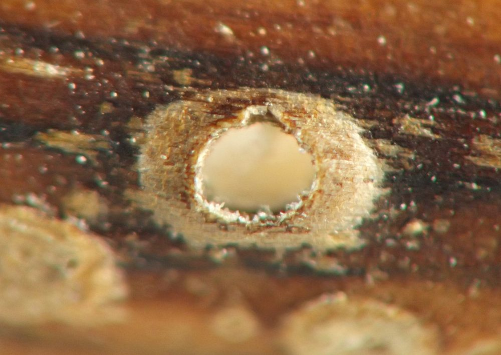

Stem borer (Coleoptera: Curculionoidea) in Bidens
| Record no.: | 0095 |
|---|---|
| Feeding guild: | Stem borer |
| Taxonomy: | Coleoptera: Curculionoidea: cf. Brentidae: Apioninae |
| Stages observed: | trace, adult |
| Distribution observed: | IA |
| Hosts in Bidens: | undetermined B. sp. (beggarticks) |
I found a dead adult of this weevil in a tunnel in the pith of a dead stem of the host in winter.
The adult was positioned right at the end of the tunnel, just behind an exit hole covered in an operculum of stem epidermis that appeared to be intact and not perforated. It seemed very likely the larval form of the insect had created the tunnel and pupated inside it, and then the adult had simply died prior to emerging from the stem, but this was not directly observed. Nearby in the same stem, a similar tunnel ended in a similar exit hole whose operculum had been perforated, and the insect was no longer present. Later that same winter, I discovered comparable tunnels, all of them also evacuated, in several other dead stems of the host at the same location. These observations would seem to lend credence to the hypothesis about the first individual.
The adult (first individual) was a very small, black weevil with a long, curved rostrum and a notably arched body. The tunnel contained scattered grains of dark brown solid frass, which contrasted sharply with the white color of the surrounding pith.
Tuttle (1952) reported Fallapion prob. melanarium from stems of Bidens cernua in Illinois and described aspects of its life history on this plant. He found adults mating and ovipositing in the stems in July, and recovered the ~3.5mm mature larvae from their tunnels in the stems in mid-September, rearing several adults from these by the end of the month. The larvae "[tunneled] less than 1.5 inches up and down in the stem of the host plant" (p. 17). Kissinger (1968) assigned these observations to species melanarium as well and reported that Tuttle also found the species breeding in B. frondosa.

 Prev
Prev
{kind=link}
{kind=link}

{kind=link}

{kind=link}

{kind=link}

{kind=link}

{kind=link}

{kind=link}

- Kissinger, D.G. 1968. Curculionidae subfamily Apioninae of North and Central America: with reviews of the world genera of Apioninae and world subgenera of Apion Herbst (Coleoptera). Taxonomic Publications: South Lancaster, Massachusetts. 559 pp.[return to in-text citation]
- Tuttle, D.M. 1952. Studies in bionomics of Curculionidae. University of Illinois at Urbana-Champaign [PhD thesis]. Retrieved January 26, 2026 from https://www.proquest.com/openview/2d614291d036d05560b74e955288503b/.[return to in-text citation]
Page created: February 10, 2026. Last update: August 23, 2026